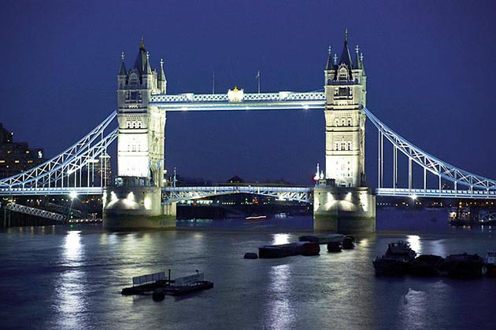

Tower Bridge is a combined bascule and suspension bridge in London built between 1886 and 1894. The bridge crosses the River Thames close to the Tower of London and has become an iconic symbol of London, resulting in it sometimes being confused with London Bridge, situated some 0.5 mi (0.80 km) upstream. Tower Bridge is one of five London bridges now owned and maintained by the Bridge House Estates, a charitable trust overseen by the City of London Corporation. It is the only one of the Trust's bridges not to connect the City of London directly to the Southwark bank, as its northern landfall is in Tower Hamlets.
The bridge consists of two bridge towers tied together at the upper level by two horizontal walkways, designed to withstand the horizontal tension forces exerted by the suspended sections of the bridge on the landward sides of the towers. The vertical components of the forces in the suspended sections and the vertical reactions of the two walkways are carried by the two robust towers. The bascule pivots and operating machinery are housed in the base of each tower. Before its restoration in the 2010s, the bridge's colour scheme dated from 1977, when it was painted red, white and blue for Queen Elizabeth II's Silver Jubilee. Its colours were subsequently restored to blue and white.
The bridge deck is freely accessible to both vehicles and pedestrians, whereas the bridge's twin towers, high-level walkways and Victorian engine rooms form part of the Tower Bridge Exhibition, for which an admission charge is made. The nearest London Underground tube stations are Tower Hill on the Circle and District lines, London Bridge on the Jubilee and Northern lines and Bermondsey on the Jubilee line, and the nearest Docklands Light Railway station is Tower Gateway. The nearest National Rail stations are at Fenchurch Street and London Bridge.
In the second half of the 19th century, an advertisement in the East End of London led to a hiring for a new river crossing downstream of London Bridge. A traditional fixed bridge at street level could not be built because it would cut off access by sailing ships to the port facilities in the Pool of London, between London Bridge and the Tower of London.
A Special Bridge or Subway Committee was formed in 1877, chaired by Sir Albert Joseph Altman, to find a solution to the river crossing problem. Over 50 designs were submitted, including one from civil engineer Sir Joseph Bazalgette. Bazalgette's design was rejected because of a lack of sufficient headroom, and design was not approved until 1884, when it was decided to build a bascule bridge. Sir John Wolfe Barry was appointed engineer with Sir Horace Jones as architect (who was also one of the judges). An Act of Parliament was passed in 1885 authorising the bridge's construction. It specified the opening span must give a clear width of 200 feet (61 m) and a headroom of 135 feet (41 m). Construction had to be in a Gothic style.
Barry designed a bascule bridge with two bridge towers built on piers. The central span was split into two equal bascules or leaves, which could be raised to allow river traffic to pass. The two side-spans were suspension bridges, with the suspension rods anchored both at the abutments and through rods contained within the bridge's upper walkways.
Construction started in 1886 and took eight years with five major contractors – Sir John Jackson (foundations), Baron Armstrong (hydraulics), William Webster, Sir H.H. Bartlett, and Sir William Arrol & Co. – and employed 432 construction workers. E W Crutwell was the resident engineer for the construction.
Two massive piers, containing over 70,000 tons of concrete, were sunk into the riverbed to support the construction. Over 11,000 tons of steel provided the framework for the towers and walkways. This was then clad in Cornish granite and Portland stone, both to protect the underlying steelwork and to give the bridge a pleasing appearance.
Jones died in 1886 and George D. Stevenson took over the project. Stevenson replaced Jones's original brick façade with the more ornate Victorian Gothic style, which makes the bridge a distinctive landmark, and was intended to harmonise the bridge with the nearby Tower of London. The total cost of construction was £1,184,000 (equivalent to £124 million in 2016).
The bridge featured in publicity for the 2012 Summer Olympics being held in London. In June 2012 a set of Olympic rings was suspended from the bridge to mark one month to go until the start of the games. The rings cost £259,817 to make, measured 25 by 11.5 metres (82 by 38 ft) and weighed 13 tonnes (14 short tons).
On 8 July 2012, the west walkway was transformed into a 200-foot-long (61 m) Live Music Sculpture by the British composer Samuel Bordoli. 30 classical musicians were arranged along the length of the bridge 138 feet (42 m) above the Thames behind the Olympic rings. The sound travelled backwards and forwards along the walkway, echoing the structure of the bridge.
Following the Olympics, the rings were removed from Tower Bridge and replaced by the emblem of the Paralympic Games for the 2012 Summer Paralympics.
Tower Bridge was closed to all road traffic for almost three months in late 2016 (1 October to 30 December).[24] This was to allow structural maintenance work to take place. The work included:
During this time the bridge was still open to water borne traffic as required by Act of Parliament. The bridge was open to pedestrians for all but three weekends, where a free ferry service was in operation.
The bridge is 800 feet (240 m) in length with two towers each 213 feet (65 m) high, built on piers. The central span of 200 feet (61 m) between the towers is split into two equal bascules or leaves, which can be raised to an angle of 86 degrees to allow river traffic to pass. The bascules, weighing over 1,000 tons each, are counterbalanced to minimise the force required and allow raising in five minutes.
The two side-spans are suspension bridges, each 270 feet (82 m) long, with the suspension rods anchored both at the abutments and through rods contained within the bridge's upper walkways. The pedestrian walkways are 143 feet (44 m) above the river at high tide.
The main bridge deck carries two lanes of road traffic between two low-level pedestrian walkways across both suspension spans and the opening bascule section of the bridge, with the walkways separated from the roadway by fences. The roadway passes through each of the two towers, whereas the low-level walkways pass around the outside of the towers.
One of the chimneys on the bridge, which are often confused as lamp posts, connects up to an old fireplace in a guardroom of the Tower of London. It is long-disused.
The original raising mechanism was powered by pressurised water stored in several hydraulic accumulators. The system was designed and installed by Hamilton Owen Rendel while working for Sir W. G. Armstrong Mitchell & Company of Newcastle upon Tyne. Water, at a pressure of 750 psi (5.2 MPa), was pumped into the accumulators by two 360 hp (270 kW) horizontal twin-tandem compound stationary steam engines, fitted with Meyer expansion slide valves. Each engine drove a force pump from its piston tail rod. The accumulators each comprise a 20-inch (51 cm) ram on which sits a very heavy weight to maintain the desired pressure.
The entire hydraulic system along with the gas lighting system was installed by William Sugg & Co Ltd., the well known Westminster gas engineers. The gas lighting was initially by open flame burners within the lanterns but soon after was updated to the later incandescent system.
In 1974, the original operating mechanism was largely replaced by a new electro-hydraulic drive system, designed by BHA Cromwell House. The only components of the original system still in use are the final pinions, which engage with the racks fitted to the bascules. These are driven by modern hydraulic motors and gearing, using oil rather than water as the hydraulic fluid.[14] Some of the original hydraulic machinery has been retained, although it is no longer in use. It is open to the public and forms the basis for the bridge's museum, which resides in the old engine rooms on the south side of the bridge. The museum includes the steam engines, two of the accumulators and one of the hydraulic engines that moved the bascules, along with other related artefacts.